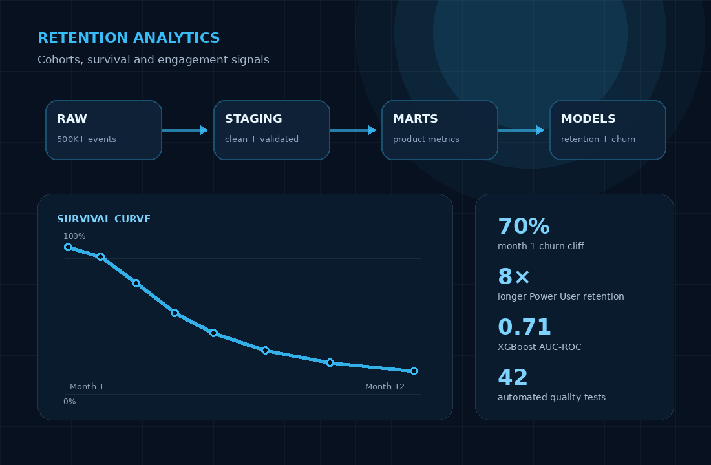
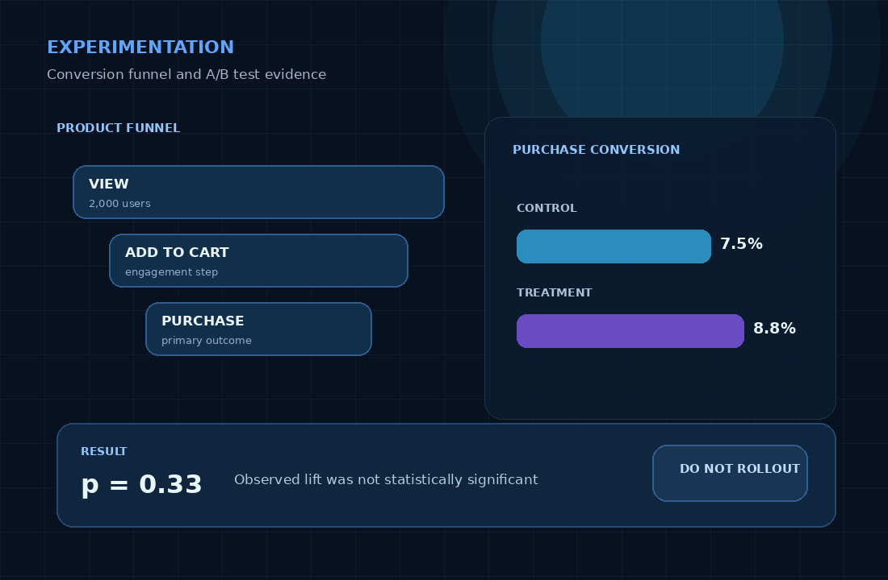
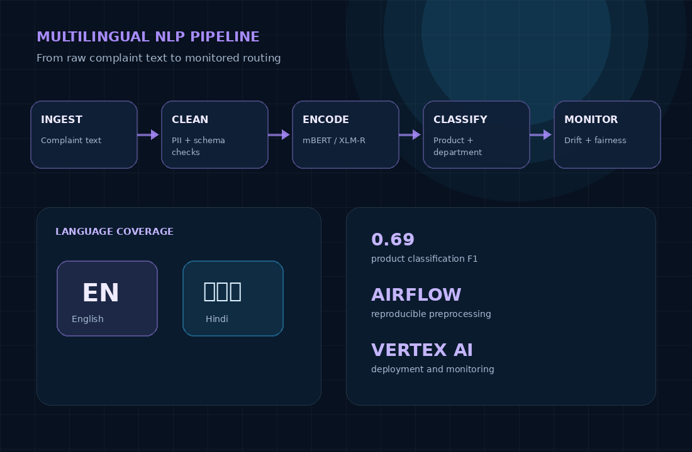

Immediately available · Open to relocation across India
DATA ANALYST · BUSINESS INTELLIGENCE · PRODUCT ANALYTICS
I turn complex data into clear business decisions.
Data Analyst
Data Analyst with 3+ years of experience across SaaS, automotive, and manufacturing. I build KPI frameworks, reusable data models, forecasts, dashboards, and product analyses using SQL, Python, Power BI, PostgreSQL, and dbt Core.

Anirudh Hegde
Gurugram, India
decision_dashboard.sql
ANALYTICS IMPACT
From data to action
LIVE
12+KPIs standardised
10+Tables modelled
15+Quality checks
ABOUT
Analytics that supports a decision, not just a dashboard.
My experience combines business context, statistical reasoning, data modelling, and stakeholder communication. I work backwards from the decision a team needs to make, then build the smallest reliable analysis needed to answer it.
Define the metric
Turn ambiguous business language into clear KPI definitions, grains, filters, and reusable reporting logic.
Validate the data
Use SQL, Python, and dbt tests to catch nulls, duplicates, broken joins, stale data, and schema issues.
Explain the decision
Translate funnel drops, forecast variances, experiment results, and operating signals into concrete next steps.
FEATURED WORK
Case studies built around real business questions.
Each project begins with a decision, uses the appropriate analytical method, and ends with a recommendation.

01
Product Analytics · Analytics Engineering
SaaS Churn & Retention Analytics Pipeline
Which user behaviours predict early churn, and which segments retain longest?
500K+ records
42 automated tests
0.71 AUC-ROC
70% month-1 churn cliff
Built a PostgreSQL and dbt analytics pipeline with layered raw, staging, and marts models. Applied Kaplan-Meier survival analysis and XGBoost to identify the largest retention risks and the behaviours associated with longer product usage.
Recommendation:
Prioritise month-one activation and recurring engagement because engagement frequency was the strongest churn driver.

02
Experimentation · Conversion Analytics
E-commerce Conversion Optimization
Should a redesigned product page be rolled out?
2,000 users
7.5% → 8.8%
p = 0.33
No full rollout
Evaluated the complete view-to-cart-to-purchase journey using Chi-square testing, Fisher’s exact tests, confidence intervals, and segment diagnostics. Separated the overall experiment result from exploratory segment findings.
Recommendation:
Do not roll out Treatment B because the observed lift was not statistically significant. Validate the Europe + Tablet signal with a larger targeted experiment.

03
Data Pipeline · NLP · MLOps
Bilingual Complaint Classification System
How can English and Hindi complaints be routed automatically?
English + Hindi
0.69 F1
Airflow pipeline
Vertex AI deployment
Built an Airflow preprocessing workflow covering language filtering, schema checks, PII anonymisation, abusive-content filtering, and BigQuery loading. Fine-tuned multilingual transformer models and added deployment and monitoring components.
Outcome:
Delivered an end-to-end classification workflow that supports multilingual routing, reproducible preprocessing, model validation, and cloud deployment.
EXPERIENCE
Three industries. One consistent approach to analytics.
I have worked with product, operations, strategy, procurement, and leadership teams across SaaS, automotive, and manufacturing.
Data Analyst
Ipserlab LLC
- Standardised 12+ marketplace KPIs and created a SQL-based source of truth that informed 2 product-roadmap changes and 1 pricing revision.
- Analysed the end-to-end buyer funnel to identify stage-level drop-offs and prioritise workflow improvements with Product and Operations.
- Designed a reusable PostgreSQL marketplace model across 10+ tables for funnel, conversion, and revenue reporting.
- Implemented 15+ Python and SQL quality checks covering nulls, duplicates, referential integrity, and freshness.
SQLPostgreSQLProduct AnalyticsFunnel AnalysisData Quality
Assistant Manager, Powertrain Planning (Analytics)
Maruti Suzuki India Limited
- Benchmarked 8 powertrain variants against 240+ competitor models across 10+ OEMs for senior product-planning decisions.
- Modelled fleet fuel-efficiency, sales-mix, and emissions scenarios that supported a 10% improvement in projected fuel-efficiency targets.
- Developed sales and carbon-emission forecasts through 2027 and built a Power BI actual-vs-plan dashboard.
- Translated forecast variances, competitor movements, and sales-mix shifts into weekly product-planning recommendations.
Power BIForecastingCompliance AnalyticsBenchmarkingStrategy
Assistant Manager, Project Management (Analytics)
Godrej & Boyce Mfg. Co. Ltd.
- Built a weekly Power BI project-health dashboard across 4 government contracts covering cost, timelines, procurement, and delivery risk.
- Supported a 15% reduction in project cost overruns by tracing variance to supplier delays, procurement gaps, and reporting issues.
- Analysed revenue concentration across 40+ client accounts and identified the top 5 as 60% of revenue.
Power BIProject AnalyticsRoot-Cause AnalysisCost VarianceReporting
CAPABILITIES
A practical analytics stack from raw data to recommendation.
SQL & Data Modelling
SQL, PostgreSQL, CTEs, window functions, dimensional modelling, schema design, data-quality testing
BI & Reporting
Power BI, DAX, Power Query, Tableau, Advanced Excel, KPI reporting, executive dashboards, data visualisation
Product Analytics
Funnel analysis, cohort analysis, retention, churn, A/B testing, hypothesis testing, conversion analysis
Python & Statistics
Python, Pandas, NumPy, SciPy, scikit-learn, XGBoost, forecasting, survival analysis, model evaluation
Data Engineering
dbt Core, Airflow, ETL/ELT, Docker, GitHub Actions, CI/CD, BigQuery, GCP
Business Partnership
Requirements gathering, stakeholder reporting, root-cause analysis, data storytelling, executive communication
EDUCATION
Analytics engineering grounded in business and operations.
2025
Master of Science in Data Analytics Engineering
Northeastern University · Boston, Massachusetts
GPA: 3.92 / 4.002020
Bachelor of Technology in Mechanical and Automation Engineering
Guru Gobind Singh Indraprastha University · New Delhi, India
CONTACT
Looking for an analyst who connects data to business decisions?
I am immediately available and open to Data Analyst, BI Analyst, Product Analyst, and Analytics Engineer opportunities across India.